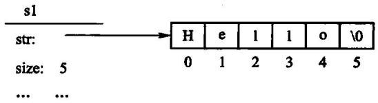
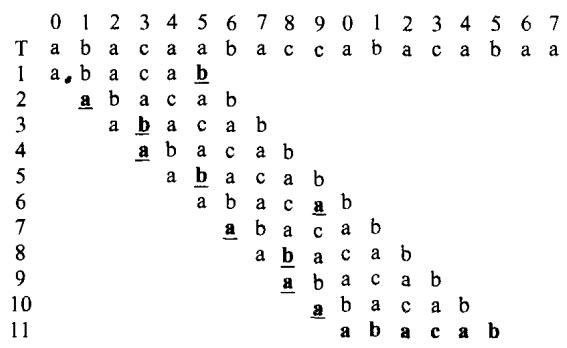
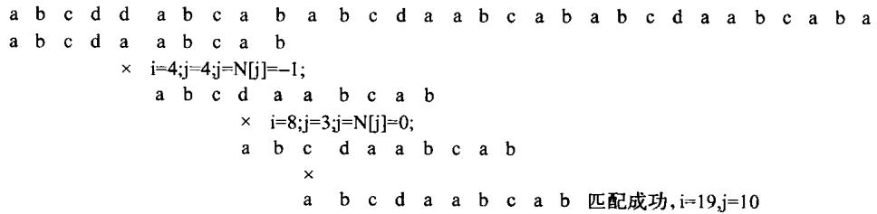

一类内容受限的线性表：每个元素都是字符。
两件事要分开：
本章有一处不是写法问题，是算法结果错——原书两个匹配算法返回的位置都差 1。
比较两个串的大小：从左到右逐字符比， 第一个不同的字符谁大串就谁大；都相同则短的小。
字符串的逻辑元素是“字符”，内存中保存的是编码单元。
| 编码 | 一个码点占用 | 关键事实 |
|---|---|---|
| ASCII | 1 字节 | 只覆盖 0–127 |
| UTF-8 | 1–4 字节 | 与 ASCII 兼容，长度可变 |
char 是一个字节，不等于一个人眼字符std::string::size() 返回字节数u8"..." 表示 UTF-8 字节序列；接口仍是字符串的查找与拼接。
ASCII 中数字、大写字母、小写字母各自连续递增， 但码元顺序不是中文拼音、重音或大小写折叠后的自然语言顺序。
对 std::string，比较的是编码单元字典序：
"123" < "1234" < "23"前缀相同时，较短者更小。比较前必须约定编码与规范化方式。
C++ 陷阱：两边都是字符串字面量时，< 比的是数组地址； 至少一边先转成 std::string，才是内容比较。
字符串长度会变。所以要动态分配、按新长度重新开辟、拷贝、释放。

所以这里是手写的 char* 缓冲区，不是 std::string—— 换成 std::string，这一节就没了。
// 空串。**注意它仍然申请了 1 个字节**，里面放一个 '\0'。
// 这样 c_str() 永远返回一个合法的 C 字符串，调用方不必先判空指针。
String() : data_(new char[1]), size_(0) {
data_[0] = '\0';
}
// 从 C 字符串构造。参数是 `const char*` 而不是原书的 `char*`——
// 原书那个签名让它自己书里的例子 `String s1 = "Hello";` 从 C++11 起就编译不过：
// 字符串字面量的类型是 const char[6]，绑不到 char*。
//
// 这里**故意不加 explicit**，为的就是保住 `String s1 = "Hello";` 这种写法。
String(const char* s) { // NOLINT(google-explicit-constructor)
if (s == nullptr) {
throw std::invalid_argument("String: 不能用空指针构造字符串");
}
size_ = std::strlen(s);
data_ = new char[size_ + 1];
std::memcpy(data_, s, size_ + 1); // +1 把结尾那个 '\0' 也带上
}
// 三法则：自己管着 new 出来的缓冲区，拷贝必须自己写。
// 原书正文里描述过赋值时「必须释放 s1 的原有空间」，却没有把拷贝构造和
// 拷贝赋值作为清单给出。只有析构没有这两个，一次 `String b = a;` 就是二次释放。
String(const String& other) : data_(new char[other.size_ + 1]), size_(other.size_) {
std::memcpy(data_, other.data_, size_ + 1);
}// 在串尾添加一个字符。
//
// **变长存储的代价在这里看得最清楚**：字符串长度变了，就得重新申请一块、
// 把老内容拷过去、再把老的还回去。所以 append 一个字符是 O(n)，不是 O(1)。
//
// 返回自身引用，于是 `s.append('a').append('b')` 可以连着写；
// 原书【代码4.1】声明的是**按值返回**，调用方从签名看不出它改不改本串。
String& append(char c) {
char* fresh = new char[size_ + 2]; // 老内容 + 新字符 + '\0'
std::memcpy(fresh, data_, size_);
fresh[size_] = c;
fresh[size_ + 1] = '\0';
delete[] data_;
data_ = fresh;
++size_;
return *this;
}变长存储的代价在这里看得最清楚：长度变了，就得重新申请一块、 把老内容拷过去、再把老的还回去。
所以追加一个字符是 O(n)，不是 O(1)。
原书【算法4.5】在起始位置越界时写 return NULL;。
返回类型是 String，所以 NULL 不是空串—— 它先转成 char*，再走 String(char*) 构造函数，于是 strlen(nullptr)。
$ ./s7
准备调用 s.Substr(99, 1)
runtime error: null pointer passed as argument 1, which is declared to never be null
AddressSanitizer:DEADLYSIGNAL
ERROR: AddressSanitizer: SEGV on unknown address 0x000000000000这段能编译，崩在运行期。
// 【算法4.5】从 pos 开始取长度至多 len 的子串。
//
// 原书在 `pos >= size` 时 `return NULL;`。那不是「返回空串」——
// NULL 会去走 String(char*) 构造函数，然后 strlen(nullptr) 当场段错误。
// 这里越界就抛异常，让错误停在发生的地方。
// pos == size() 是合法的，得到空串（「从末尾取 0 个字符」）。
String substr(size_type pos, size_type len) const {
if (pos > size_) {
throw std::out_of_range("String::substr: 起始位置越界");
}
size_type available = size_ - pos;
size_type take = (len < available) ? len : available; // 原书的 if (n > left) n = left
String result;
char* fresh = new char[take + 1];
std::memcpy(fresh, data_ + pos, take);
fresh[take] = '\0';
delete[] result.data_;
result.data_ = fresh;
result.size_ = take;
return result;
}std::out_of_range，让错误停在发生的地方pos == size() 是合法的，得到空串len 超出剩余长度时截断，与原书 if (n > left) n = left; 一致// 【算法4.4】从 start 开始查找字符 c。找到返回下标，没找到返回空 optional。
// 原书用 -1 表示没找到——与「位置 0」只差一个符号，忘了判就会读错位置。
std::optional<size_type> find(char c, size_type start = 0) const {
for (size_type i = start; i < size_; ++i) {
if (data_[i] == c) {
return i;
}
}
return std::nullopt;
}原书用 -1 表示没找到——与「位置 0」只差一个符号， 调用方漏判就会把「没找到」当成「匹配在开头」。
在正文 T 里找模式 P 第一次出现的位置。

朴素做法：把 P 对齐到 T 的每个位置试一遍， 失配就把 P 整体右移一位，从头再比。
文本 T a b a b c
模式 P a b c
对齐 0: a b a b c 比 a=a, b=b, a!=c 失配, P 右移一位
a b c
对齐 1: a b a b c 比 b!=a 失配
a b c
对齐 2: a b a b c 比 a=a, b=b, c=c 匹配! 返回 2
a b c每次失配，文本指针退回去从下一个位置重来。 最坏 O(n×m)：T 全是 a、P 是 aaab 时，每次都要比到最后一个。
完整实现见 code/ch04/pattern_matching/modern.hpp。
原书【算法4.6】和【算法4.8】匹配成功时返回 j - pLen + 1。
在 0 起始下标下，这个值一律差 1。
文本 abcddabcababcdaabcababcdaabcabaa
模式 abcdaabcab
正确起始下标 10
原书返回 11四组数据对拍证实。本书返回 j - pLen。
文本 a b a b c a b c a c b a b
模式 a b a b c a b c a c b a b
^ 在这里失配失配时，前面那一段是已经比对过的——它的内容我们完全知道。 朴素做法把这份信息全扔了，退回去从头再比。
KMP 的想法：利用失配位置之前的信息，直接算出该滑多远， 文本指针永不回退。
对模式 P 的每个位置 i，问：
P[0..i-1]这一段里，最长的「既是前缀又是后缀」的长度是多少？
P a b a b c
下标 0 1 2 3 4
next -1 0 0 1 2next[3] = 1：P[0..2] = "aba"，前缀 a 和后缀 a 相同，长度 1。
P a b a b c
i 0 1 2 3 4
next -1 0 0 1 2next[2] = 0：P[0..1] = "ab"，没有相同的前后缀next[3] = 1：P[0..2] = "aba"，前缀 a 和后缀 a 相同next[4] = 2：P[0..3] = "abab"，前缀 ab 和后缀 ab 相同代价 O(m)：i 只增不减，k 每次至多增 1， 所以总回退次数不超过总前进次数。

失配在模式的第 j 位时：
朴素 j = 0 文本指针 i 退回到本次对齐的下一位
KMP j = next[j] 文本指针 i 一步都不退「文本指针永不回退」是全部的关键——i 只增不减，所以是 O(n+m)。
完整实现见 code/ch04/pattern_matching/modern.hpp。
| 朴素 | KMP | |
|---|---|---|
| 预处理 | 无 | O(m) 建 next |
| 最好 | O(n) | O(n) |
| 最坏 | O(n×m) | O(n+m) |
| 文本指针 | 会回退 | 永不回退 |
| 额外空间 | 无 | O(m) |
「文本指针永不回退」不只是快——它让 KMP 能处理流式输入： 文本可以边读边匹配，不需要缓存回退。
String(char*) 让书里自己的例子编译不过； Substr 越界 return NULL 运行期崩；两个匹配算法返回值差 1find 用 optional 而不是 -1——与第 2 章同一条口径python3 tools/check_code.py code/ch04/pattern_matchingj = next[j] 改成 j = 0，看结果和耗时怎么变aaaa...a 找 aaab），比较两个算法的比较次数测试里有 3000 组随机对拍：朴素和 KMP 必须给出同样的答案。
放映快捷键
→ / 空格下一页 ←上一页 Home / End首尾
N演讲者备注 O缩略图总览 F全屏 D深色
?这张帮助 Esc关闭
导出 PDF：浏览器打印（Ctrl/Cmd+P），每页一张幻灯片。